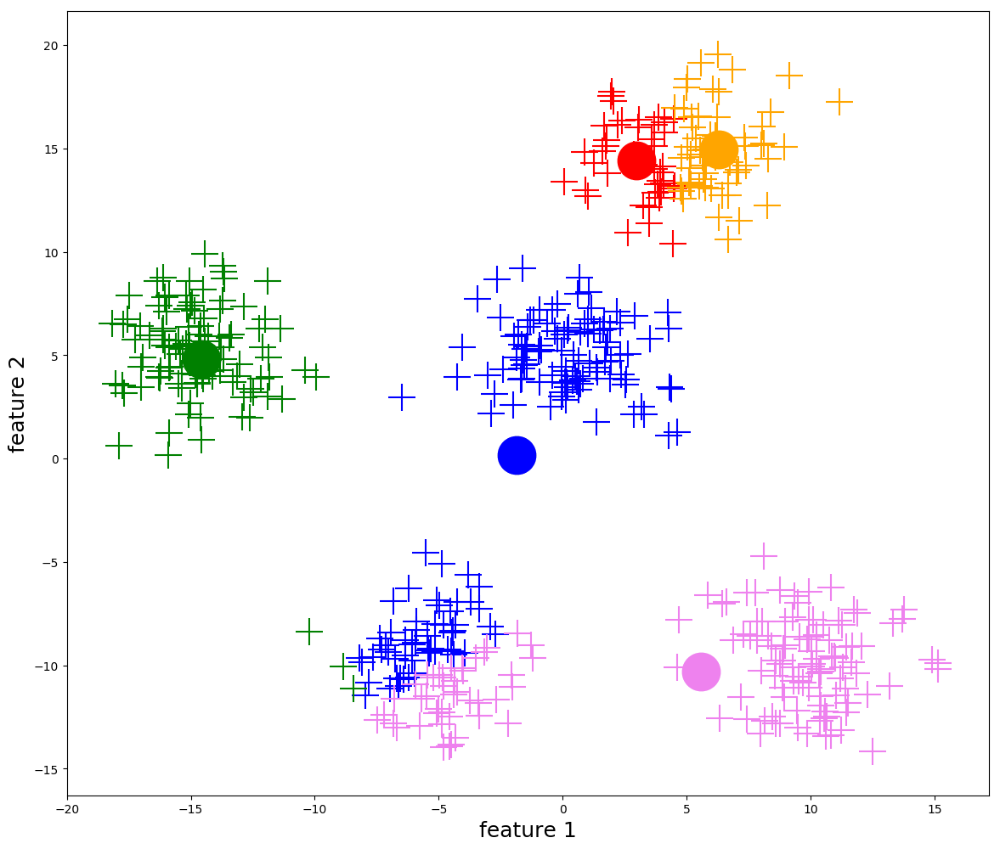

k-means及其推广
谈到聚类（clustering），k-means 无疑是最先想到的算法之一了。其思想异常的简单有效，以至于我之前没有深究过其中的奥秘与坑点。今天就来更深入地探究一下 k-means。
1 算法描述
本节主要参考资料[1].
设我们有 \(n\) 个样本 \(X=\{x_1,\ldots,x_n\}\)，每个样本有 \(d\) 维，即 \(x_i\in \mathbb R^d\)。k-means 欲将样本分到 \(k\) 个类 \(G_1,\ldots,G_k\) 中，且这些类构成对样本集 \(X\) 的一个划分，一个划分就是一个聚类结果。记 \(C\) 表示划分，即 \(l=C(i)\) 表示将样本 \(x_i\) 分到类 \(l\) 中.
k-means 的优化目标是最小化所有样本到其所属类中心的距离之和： \[ \min_{C,m_1,\ldots,m_k}\sum_{l=1}^k\sum_{C(i)=l}\|x_i-m_l\|^2 \] 然而这是一个组合优化问题，直接求解是 NP-hard 的，因此我们采用迭代的方式求解：
随机选择 \(k\) 个样本作为中心 \((m_1,\ldots,m_k)\).
对给定的中心，求最优划分，即： \[ \min_C \sum_{l=1}^k\sum_{C(i)=l}\|x_i-m_l\|^2 \] 显然，最优划分就是将每个样本划分给距离它最近的那个中心。
对于给定划分，求各类最优中心，即： \[ \min_{m_1,\ldots,m_k} \sum_{l=1}^k\sum_{C(i)=l}\|x_i-m_l\|^2 \] 求偏导并令为零，容易得到上式的最优解是： \[ m_l=\frac{1}{n_l}\sum_{C(i)=l}x_i\quad l=1,\ldots,k \] 其中 \(n_l\) 是属于第 \(l\) 类的样本数量，最优解即是对各类分别计算样本的均值（也称质心）。
迭代执行 2、3 步直至收敛。

2 收敛性
k-means 一定收敛吗？答案是肯定的。对每一轮迭代：
- 第 2 步中，如果新的划分与上一轮的划分相同，那么下一次划分也将相同，迭代终止；
- 第 2 步中，如果新的划分与上一轮的划分不同，必然是因为有样本发现了更近的类中心，所以损失函数值必然减小；
- 第 3 步中，损失函数值不增。
故每一轮迭代后，如果没有终止，损失函数必然减小。再注意到将 \(n\) 个样本划分成 \(k\) 类的方案数是有限的，因此只可能出现有限次迭代，即 k-means 必然在有限步内收敛。
虽然 k-means 一定收敛，但可能收敛到局部最优解，这完全取决于初始化的情况。因此在实际应用中，常常用不同随机种子跑多次。
3 其他距离度量
许多资料在介绍 k-means 算法时，直接称「k-means 是基于欧式距离的」。这自然引发了我们思考——能不能采用其他的距离度量呢？
答案是 k-means 的核心思想依旧适用，只不过这时候不该叫做 k-means 了——"means" 这个名称来自于第 3 步中求均值，而之所以求均值，是因为均值是以平方误差（欧式距离）为损失函数的最优解。改变了距离度量，就改变了损失函数，就改变了最优解的形式。
换个角度说，如果使用其他距离确定划分（第 2 步），却依然用均值来更新类中心（第 3 步），就意味着第 2、3 步的损失函数不同，这很可能导致算法不收敛——毕竟第二节的收敛性证明依赖于第 2、3 步在优化同一个损失函数[4]。
总而言之，通过改变距离度量，k-means 可以扩展为以下框架：
随机初始化 \(k\) 个中心 \((m_1,\ldots,m_k)\).
对给定的中心，求最优划分，即： \[ \min_C \sum_{l=1}^k\sum_{C(i)=l}\text{dist}(x_i,m_l) \] 显然，最优划分是将每个样本划分给距离它最近的那个中心。
对于给定划分，求各类最优中心，即： \[ \min_{m_1,\ldots,m_k} \sum_{l=1}^k\sum_{C(i)=l}\text{dist}(x_i,m_l) \] 对于不同距离的度量，最优解的形式有所不同。
迭代执行 2、3 步直至收敛。
3.1 曼哈顿距离——k-medians
曼哈顿距离，也即 L1 距离，定义为： \[ \text{dist}(x,y)=\|x-y\|_1=\sum_{j=1}^d |x_j-y_j| \] 在曼哈顿距离下，第 3 步的最优解是中位数（median），可以参见链接第2.2节。因此，该算法被称作 k-medians.
中位数相比于均值的优势在于不易受到噪声点的干扰——如果有一个数据点特别离谱，它对均值的影响将是巨大的，但中位数可能根本不变。
3.2 汉明距离——k-modes
如果样本各维度都取离散值，汉明距离也是常用的一种度量： \[ \text{dist}(x,y)=\sum_{j=1}^d[x_j\neq y_j] \] 即比较两个向量有多少维取值不同。
在汉明距离下，第 3 步的最优解是众数（mode）。因此，该算法被称作 k-modes.
3.3 任意距离——k-medoids
对于任意的距离度量，第 3 步很可能没有一个像均值/中位数/众数那么好看的解，而最为暴力的求解方法就是——枚举！我们当然不可能在实值空间里枚举，但可以只在样本点中枚举——这就是 k-medoids 算法。从求解过程可以看出，k-medoids 得到的中心点一定是某些样本点，这也是它与 k-means、k-medians 和 k-modes 的一个不同之处。
k-medoids 有一个特殊的应用场景——只知道样本点两两之间的距离，但不知道样本点具体是多少。无论是 k-means, k-medians 还是 k-modes，计算均值/中位数/众数必然需要样本点具体的值，所以它们无法应用在这个特殊的场景下。但是仔细看一看 k-medoids 的计算过程会发现，k-medoids 只需要样本点两两之间距离足矣[5]。
不过，k-medoids 的缺点也很显著——枚举耗时巨大。因此诸如 PAM(Partitioning Around Medoids) 等算法被提出以减小复杂度，此处按下不表。
综上所述，我们发现想要用一个新的距离度量，整体算法框架就是本节开头所述那样，其中只需要想办法求解第 3 步——如果没有解析解，那就枚举（k-medoids）；如果有，恭喜你，你可以把这个算法叫做 「k-some_strange_word_starting_with_the_letter_m」 了！（大雾）下面我们用余弦相似度举个例子。
3.4 余弦相似度——spherical k-means
其实寻找基于余弦相似度的 k-means 算法正是本文的写作动机。最无脑的解决方案无非是用 k-medoids 算法，但为了效率考虑，我们不妨尝试一下第 3 步能否求出解析解[6][7]： \[ \max_{m_1,\ldots,m_k} \sum_{l=1}^k\sum_{C(i)=l}\cos(x_i,m_l)\iff \max_{m_1,\ldots,m_k} \sum_{l=1}^k\sum_{C(i)=l}\frac{x_i\cdot m_l}{\|x_i\|\|m_l\|} \] 由于类与类互相独立，所以只需考虑： \[ \max_{m_l}\sum_i\frac{x_i\cdot m_l}{\|x_i\|\|m_l\|} \] 求和是对所有 \(\{i:C(i)=l\}\) 求和，书写简便起见省略了条件。由于 \(m_l\) 模长与优化目标无关，不妨假定为 \(1\)，优化问题变为： \[ \begin{align} \max_{m_l}&\sum_i\frac{x_i\cdot m_l}{\|x_i\|}\\ \text{s.t.}& \|m_l\|^2=1 \end{align} \] 引入拉格朗日乘子： \[ L(m_l, \lambda)=\sum_i\frac{x_i\cdot m_l}{\|x_i\|}-\lambda (\|m_l\|^2-1) \] 求偏导： \[ \begin{align} &\frac{\partial L}{\partial m_l}=\left(\sum_i\frac{x_i}{\|x_i\|}\right)-2\lambda {m_l}&&\text{note that this is a vector}\\ &\frac{\partial L}{\partial \lambda}=1-\|m_l\|^2 \end{align} \] 令为零，解得： \[ m_l=\frac{1}{2\lambda}\left(\sum_i\frac{x_i}{\|x_i\|}\right) \] 其中 \(1/2\lambda\) 是归一化系数，以使得 \(m_l\) 是单位向量。不过鉴于余弦相似度与 \(m_l\) 模长无关，所以是否归一化也不重要。
综上所述，对于类 \(l\)，其类中心 \(m_l\) 应更新为所有属于类 \(l\) 的样本归一化后的和（或平均）。事实上，这个算法被称作 spherical k-means[8].
考虑一个特殊情况：样本 \(x_i\) 本来就是归一化的，即模长为 \(1\). 那么基于等式：如果 \(x,y\) 模长都为 \(1\)，那么 \(x,y\) 的余弦相似度和欧式距离的平方具有简单的线性关系[9]： \[ \|x-y\|_2^2=x^T x+y^T y-2x^Ty=2(1-x^Ty)=2(1-\cos(x,y)) \] 容易知道，在这个特殊情况下，根据余弦相似度做 k-means，和根据欧式距离做 k-means 是等价的。
小结
本文首先回顾了 k-means 算法的过程，然后证明了其必定在有限步内收敛。本文进一步将 k-means 的欧式距离发散到其他距离度量，得以从一个统一的视角看待 k-means、k-medians、k-modes、k-medoids、spherical k-means 算法，特别是针对余弦相似度给出了详细推导。
但是，对 k-means 的学习远不止于此，例如文献[10]从梯度下降、EM 算法、Newton 优化三个角度对 k-means 算法做了解释并辅以之实验。暂且搁置，以后有空拜读。
Reference
- 李航.统计学习方法 ↩︎
- wlad (https://stats.stackexchange.com/users/86522/wlad), Proof of convergence of k-means, URL (version: 2016-10-31): https://stats.stackexchange.com/q/188352 ↩︎
- https://www.cse.iitb.ac.in/~shivaram/teaching/old/cs344+386-s2017/resources/classnote-2.pdf ↩︎
- Has QUIT--Anony-Mousse (https://stats.stackexchange.com/users/7828/has-quit-anony-mousse), Why does k-means clustering algorithm use only Euclidean distance metric?, URL (version: 2014-01-07): https://stats.stackexchange.com/q/81496 ↩︎
- Has QUIT--Anony-Mousse (https://stats.stackexchange.com/users/7828/has-quit-anony-mousse), Perform K-means (or its close kin) clustering with only a distance matrix, not points-by-features data, URL (version: 2013-09-19): https://stats.stackexchange.com/q/32942 ↩︎
- k-means 聚类中使用余弦距离 cos distance - kuizhiqing的文章 - 知乎 https://zhuanlan.zhihu.com/p/380389927 ↩︎
- 已计算出个文本间的余弦相似度值，怎么用kmeans聚类？ - 花开如火的回答 - 知乎 https://www.zhihu.com/question/29873270/answer/2411868694 ↩︎
- Dhillon, Inderjit S., and Dharmendra S. Modha. Concept decompositions for large sparse text data using clustering. Machine learning 42, no. 1 (2001): 143-175. ↩︎
- ttnphns (https://stats.stackexchange.com/users/3277/ttnphns), Why does k-means clustering algorithm use only Euclidean distance metric?, URL (version: 2020-07-21): https://stats.stackexchange.com/q/81494 ↩︎
- Bottou, Leon, and Yoshua Bengio. Convergence properties of the k-means algorithms. Advances in neural information processing systems 7 (1994). ↩︎